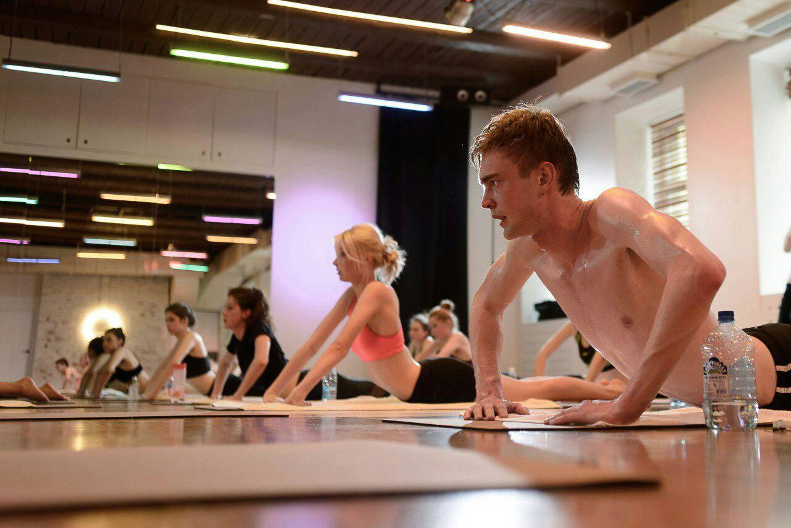

Воплощение:
Весной 2017 года наша первая студия горячей йоги Hot Yoga 36 в центре Петербурга официально открыла свои двери в доме 36 на самой ресторанной улице Рубинштейна.
Еще в процессе строительства мы поняли, что не хотим зацикливаться исключительно на традиционных бикрам-классах.
Так что в нашей студии представлены самые разные практики в нагретом зале от 30 до 40 С градусов: хатха йога, горячий пилатес, хот-виньясы, терапевтическая йога для позвоночника, цигун, кундалини, воркауты, ОМ-медитации, Ecstatic Dance и другие классические, и экпериментальные направления.
Особый микроклимат нашей студии делает ваши мыщцы и связки более податливыми: при выполнении асан в таких условиях (не забываем, что йога зародилась именно в жарком климате) идет более эффективная и глубокая работа с телом. И как следствие, вы быстрее приближаетесь к следующим уровням: работе с умом и энергиями.

Интерьер:
Мы сделали зал, о котором мечтали сами. Дизайн выполнен в стиле нью-йоркского минимализма: кирпичные стены, рецепция из светлой фанеры с многочисленными стыками под прямыми углами, ромбовидные подоконники, элементы уличного street-art. В светлом зале, где проходят занятия - зеркальные стены и 140 метров португальской пробки на полу и уникальные пробковые коврики со слоганом Karma has no deadline, которые не боятся повышенной влажности. Тропический климат (от 36 до 40 C градусов по Цельсию и 40 % влажности) создается и контролируется при помощи высокотехнологичного оборудования из Щвейцарии. На сегодняшний день мы единственная студия в России, которая использует эту систему, гарантируя постоянный приток свежего воздуха, что исключает кислородный голод. В мужских и женских раздевалках предусмотрены индивидуальные шкафчики, душевые, тёплые полы.
Атмосфера:
Помимо высокотехнологичного оборудования и сертифицированных преподавателей, студию горячей йоги Hot Yoga 36 отличает рок-н-ролльная подача и особенная атмосфера. На протяжении нескольких месяцев один из владельцев студии путешествовал по всей планете и занимался в самых разных студиях горячей йоги: в Англии, Японии, Германии, Швейцарии, Дании и даже на Бали. От изотерики, благовоний и индийской атрибутики отказались сразу, так что после занятий мы включаем хиты Iggy Pop, Blondie, Young Father и др. Мы не пропагандируем никакие религиозные убеждения, не стремимся навязать собственные взгляды и против любой категоричности. Йога для нас это не умение закидывать ногу за голову, не отказ от мяса и алкоголя, не бесконечные садханы в 5 утра и гуру с секретами бессмертия. Йога – не каноны, не запреты, йога – это состояние сознания, особое мировоззрение осознанности. Йога – она как рок-н-ролл, это бесконечная жажда жизни и приключения.
ИНТЕРЕСНЫЕ ФАКТЫ О СТУДИИ:
Студия находится в доме постройки 1873 года, здесь проживал А.Г.Рубинштейн, но в то время улица именовалась Троицкой. Hot Yoga 36 находится в доме номер 36 и квартире номер 36, большинство классы проходят при температуре 36 градусов.